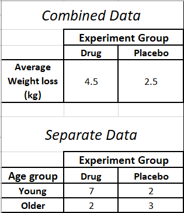

- Preface
- 1 An Overview of Data literacy
- 2 Sources and Types of Data
- 3 Data Handling in Excel
- 4 Sampling and Collecting data
1.1 Introduction
In modern society, data is everywhere. It is collected when you
make a purchase online (such as Takealot);
access a learning management system (such as ClickUP);
click an advertisement;
like or comment on someone’s social media post;
stream music or movies online (using platforms such as Spotify and Netflix);
review your experience with a product or service online (such as our stay at an Airbnb); and
engage in physical activity and even while you are sleeping! (when you are wearing a fitness tracker such as a Fitbit or Garmin).
This implies that data has now become more widely accessible to organizations as well as ordinary individuals. Using this data, organizations (and individuals) can make more data-driven decisions with statistics instead of intuition. This often leads to increased performance and efficiency, especially when compared to less data-driven approaches. However, access to data on its own isn’t enough to ensure organizational success. The users of this data, such as the employees in an organization, have to understand and know how to leverage the data and this requires that they have the necessary data literacy skills.
1.1.1 Definition
Bhargava and D’Ignazio (2015), define data literacy as the ability to read, work with, analyze and argue with data2. Reading the data involves understanding the data and being able to interpret it. Working with data involves creating, acquiring and managing the data. Analyzing the data involves filtering, sorting and aggregation of the data. Arguing with the data means using the data to communicate.
In this book, we adopt an expanded form of the above definition of data literacy. We define data literacy as the ability to manage, understand, explore, analyze, interpret and communicate with data in a meaningful way. Data literacy does not require an individual to be an expert but to show an understanding of the basic data fundamentals like data sources, data types, measurement scales, types of analysis, data cleaning, data analysis tools (such as Excel)3, concepts that will be explored in more detail in this book.
1.1.2 The importance of being data literate in modern society
In modern society, data plays a pivotal role for the proper functioning of governments, businesses, households and individuals. Being data literate: (1) can lead to timely response to socio-economic or health related issues, (2) it can create sustained economic value, (3) it can assist with making informed decisions, (4) it can improve communication and (5) lead to professional or career advancement. In this section, we briefly discuss the benefits of being data literate for each of these various stakeholders.
- Governments
Information from a population census can assist a government official or department to efficiently allocate government resources by, for instance, making sure that there is an equal distribution of services such as health and education.
- Businesses
Information from a marketing survey can assist a business to reduce its costs, improve its operational efficiency into operational excellence, improve its competitive advantage and market positioning by, for instance, understanding the trends among its customer base.
- Households
Statistical information on the annual government budget can assist households adjust savings strategies based on changes in social welfare; identify job opportunities based on the allocation of public funds to sectors such as construction and make informed decisions through civic participation and democratic engagement.
- Individuals
Statistical information from a health survey or smart watch can assist an individual to improve their health and well-being; In modern society, misinformation spreads faster and widely often resulting in inaccurate decision-making. A data-literate public is more important today in order to anticipate and prevent the negative consequences of misinformation.
1.1.3 Data Literacy Skills
The essential skills needed in order to be data literate can be divided according to the definition of data literacy as managing, exploring, analyzing, understanding, interpreting and communicating with data. The first three skills are more technical and will be explained in the following chapters. The last three skills are more practical and will be demonstrated in the following section.
1.1.4 Data Literacy in Practice
1.1.4.1 Being able to interpret or understand and use the information contained in a chart or graph.
The figure below (obtained from the 2022 South African National HIV Prevalence, Incidence, Behaviour and Communication Survey (SABSSM VI)4) shows a map of South Africa (SA) as a heatmap5. For each province, the map displays the HIV prevalence, which is the percentage of the population in the province that are HIV positive.
 A heatmap of South Africa showing the HIV prevalence rate in each province in 2022
A heatmap of South Africa showing the HIV prevalence rate in each province in 2022
From Figure ??, we can see that, in 2022, the Western Cape and Northern Cape had the lowest HIV prevalence (8.2 – 11.6%).
The figure below (Figure ?? shows a map (from an article in the September 30, 2024 issue of the Wall Street Journal) of the United States of America (USA) as a heatmap. For each state of the USA, the map displays the share of the total power consumed by data centers in 2023. The lighter the section on the map, the less the share of the power consumed by data centers.
 A heatmap of the United States showing the data centers’ share of total power consumption by state in 2023
A heatmap of the United States showing the data centers’ share of total power consumption by state in 2023From Figure ??, we can see that in the state of Michigan (Mich.), for instance, data centers consume a small share (0 – 3%) of the total power consumed by the state. Whereas, in the state of Virginia (Va.) data centers consume a large share (26%) of the total power consumed in the state.
1.1.4.2 Being able to contextualize a number given in the media:
The following is an extract from an article in the Financial Times UK6

The article talks about the growth in future copper demand from data centers as a result of Artificial Intelligence (AI). Data centers are now being used to run AI models and this process is energy intensive. Copper is used in various aspects of a data center7. The growth in data centers means the growth in copper demand. Today, of all the things copper is used for in the world, data centers account for less than 1%. This number can grow to 6% or 7% by 2050 as a result of an increase of an additional 3.4 million tonnes of global copper demand.
Possible implications of the above statistics: Increased job growth in the copper value chain and construction of data centers; Increased demand for AI and data center expertise; Increased demand for mining engineers with expertise in copper mining.
1.1.4.3 Recognising and being able to identify and avoid wrong interpretations of statistical information in the media.
Consider the following extract of an article from the Business Day8
How can we interpret the statistical information of 44% and what are its implications?
What it means:
44% of the total land area in South Africa has access to MTN’s 5G network signal.
What it doesn’t mean:
44% of South Africans use MTN’s 5G mobile network.
The United States’ (US) Center for Disease Control (CDC) reported that 99% of the monkeypox cases in the US occurred in men.
This means that:
Of all the reported monkeypox cases in the US, 99% of them were men.
It doesn’t mean that:
All the monkeypox cases in the US are men. Thus, falsely, implying that men are more likely to get monkeypox (99% chance!).
A study is conducted to assess the effectiveness of a new weight loss drug across two age groups: young adults (20-30 years) and older adults (50-60 years). The results are as follows:

Based on the combined results, we can conclude that the drug
was effective across the board. However, if we consider Young adults separate from Older adults, we can see that the drug was only effective for younger adults but not for Older adults. Thus, if we only look at the combined data without considering the age groups, we make the wrong conclusion that the drug is equally effective for all ages, while in reality the effectiveness varies between age groups. This example highlights the dangers of interpreting aggregated (combined) data without reference to disaggregated (separate) data. This reversal of conclusion based on combined and separate data is called Simpson’s Paradox. For another example of Simpson’s Paradox, watch the following video:
- A study showed that 90% of drought-tolerant plants have a certain gene X. Moreover, 20% of plants with gene X are drought tolerant.
Incorrect interpretation
Menzi, a plant physiologist at the University of Cape Town, concludes that, since 90% of the drought-tolerant plants have gene X, having gene X causes or is a strong indicator that a plant is drought-tolerant.
Correct interpretation
Hlengiwe, a plant physiologist at the Univeristy of Pretoria, concludes that although gene X is common among drought-tolerant plants (shown by a large percentage 90%!), it is not a strong indicator of drought tolerance on its own. Other factors, such as environmental conditions or additional genes, may play a significant role.
- Suppose that a researcher observes that ice cream sales and drowning incidents are positively correlated over time. As ice cream sales increase, the number of drowning incidents also increases.
Incorrect interpretation
Eating ice cream causes drowning. This is an example of confusing correlation with causation.
Correct interpretation
There is no causal relationship between ice cream sales and drowning incidents. Instead both variables are influenced by a third variable hot weather. Hot weather increases the likelihood of people swimming in pools, lakes, or the ocean, which in turn increases the risk of drowning. At the very same time, hot weather also increases the demand for ice cream, as people seek cold treats to cool down.
Thus, the correlation between ice cream sales and drowning incidents is spurious. Spurious correlation arises when two variables are coincidentally related or influenced by the same third variable, known as a confounding variable, such that they appear to be causally related.
1.1.5 Exercises to Section 1.1
Question 1
What is data literacy?
Question 2
In each of the following scenarios, identify the statistical information:
A recent poll showed that 30% of South African wealth is held by the top 1% of the wealthy individuals in the country.
An environmental survey revealed that females were more environmentally conscious than males.
A health study showed that people with nausea are more likely to have headaches.
In a retirement planning survey, the majority of people who responded were under the age of 35.
Question 3
Answer the following as True or False.
Data literacy is only useful to data analysts, statisticians and data scientists.
It is not necessary to have an advanced knowledge in Statistics in order to be data literate.
One of the skills of data literacy is the ability to argue with data.
Data literacy can improve my communication skills.
Question 4
Answer the following questions based on Figure ??.
What is the HIV prevalence rate for the North West province?
Which of the nine provinces have the largest HIV prevalence?
Which one of the following provinces has the highest HIV prevalence?
North West
Limpopo
Gauteng
How many coastal provinces have the largest HIV prevalence (18.7 – 21.8%) and how many inland provinces have the largest HIV prevalence?
Question 5
Answer the following questions based on Figure ??.
What share of the total power consumption in the state of Washington (Wash.) is used by data centers?
Which of the following states has the largest share of its total power consumed by data centers?
Texas
Nebraska (Neb.)
Question 6
Consider the following figures (from the May 6, 2024 issue of Barrons’ Magazine) which summarizes the responses by professional investment managers on their outlook on: (left figure) public USA companies (Bullish means they have a positive outlook, bearish means they have a negative outlook and neutral means they are neither positive nor negative.) and (right figure) which global public equity market they think will perform the best.

What can you say about the outlook of the majority of managers on USA public companies?
Which global public equity market is the least favored?
Something is wrong with these figures, can you identify it?
Question 7
For each of the following statements, state whether or not the interpretation of the statement is accurate. If not, motivate your answer.
Of all the people born in Gauteng, 25% of them speak Sotho. Therefore, for anyone who speaks Sotho, there is a 25% chance/probability that they were born in Gauteng.
The potato yield in the Limpopo province was found to be positively correlated with the coal production in the Mpumalanga province. Therefore, high potato yields lead to increases in coal production.
About 75% of the South African population has access to the internet. In other words, this implies that 3 in 4 South African citizens have some form of access to the internet.
https://www.media.mit.edu/publications/designing-tools-and-activities-for-data-literacy-learners/↩︎
https://sahivsoc.org/Files/SABSSMVI-SUMMARY-SHEET-2023.pdf↩︎
A heatmap is a two-dimensional visual representation of data using colors, where the colors all represent different values (https://www.investopedia.com/terms/h/heatmap.asp)↩︎
https://www.ft.com/content/da407b47-4133-470a-9574-508cee43e107↩︎
https://www.visualcapitalist.com/sp/copper-the-critical-mineral-powering-data-centers/↩︎
https://www.businesslive.co.za/bd/companies/telecoms-and-technology/2024-09-19-mtn-5g-coverage-up-to-44-of-sa/#:~:text=Mobile%20operator%20concludes%20deployment%20scope,sites%20fitted%20with%20the%20technology&text=MTN%20has%20grown%20its%205G,than%2098%25%20of%20the%20country↩︎